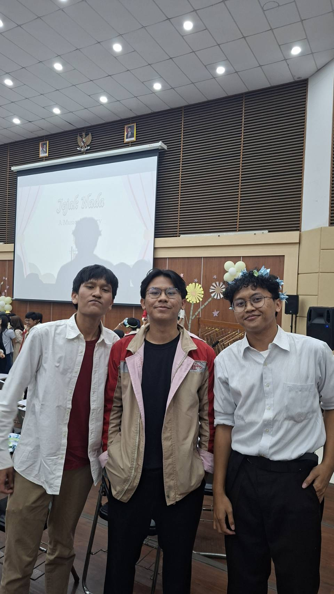

Intra-Self Communication Journal
Episode: Pengambilan Keputusan Bergabung dengan KPA-ITB pada Semester 1
Jurnal ini membedah episode komunikasi internal (intra-self) terkait pergeseran dari reaksi impulsif/kekhawatiran awal menuju pengambilan keputusan terencana (response) dalam memilih komitmen kegiatan ekstra di awal kehidupan perkuliahan.
1 Konteks Performance
- Tanggal dan Setting: Sekitar Agustus/September 2025, pada rangkaian kegiatan Open House Unit Kegiatan Mahasiswa (OHKM) ITB di lingkungan kampus. Saat itu status masih sebagai mahasiswa baru semester 1 yang belum memulai perkuliahan efektif.
- Persons dan Relationship: Berinteraksi langsung dengan pengurus dan kakak tingkat dari Keluarga Paduan Angklung ITB (KPA-ITB) di booth UKM, yang kemudian berkembang menjadi rekan satu tim dan sahabat.
- Objective dan Initial State:
- Initial State: Memiliki planning awal untuk tidak mengambil UKM pada semester 1 demi beradaptasi dengan beban akademik perkuliahan. Terdapat kekhawatiran bahwa komitmen baru akan mengganggu akademik.
- Target Objective: Mengelola konflik internal antara manajemen risiko akademik dan kebutuhan mendesak untuk membangun relasi sosial baru, serta menghasilkan kesepakatan internal (internal agreement) yang bertanggung jawab.
2 Evidence

- Deskripsi Evidence Foto: Foto bersama rekan dan kakak tingkat KPA-ITB pasca-penampilan pada acara Mini Konser “Jejak Nada: A Musical Story”[cite: 1]. Dokumentasi ini mengonfirmasi komitmen nyata yang berlanjut dari sekadar keputusan pendaftaran di OHKM menjadi tindakan/performa konkret[cite: 1].
- Kontribusi Pribadi:
- Secara mandiri mengambil keputusan pendaftaran di tengah keraguan awal.
- Mengikuti rangkaian latihan rutin secara konsisten hingga tampil di panggung mini konser[cite: 1].
- Membangun jejaring pertemanan lintas angkatan (2022–2025) dan lintas jurusan yang menjadi support system sosial.
3 Bedah Lapisan Intra-Self (Episode Analysis)
| Lapisan | Catatan Analisis |
|---|---|
| Event | Menghadiri OHKM ITB dan berinteraksi di booth KPA-ITB. |
| Fact | Belum ada jadwal kuis/tugas perkuliahan; belum ada nilai akademik; KPA-ITB membuka pendaftaran anggota baru; berinteraksi langsung dengan kakak tingkat. |
| Initial Story | “Kalau gw masuk UKM sekarang, kuliah bakal keteteran, jadwal adaptasi berantakan, dan gw gak bakal sanggup atur waktu.” |
| Emotion & Body Signal | Cemas/Ragu (6/10), Antusias/Excited (8/10), dada agak tegang saat memikirkan pertentangan rencana awal vs keinginan bersosialisasi. |
| Reactive Character | The Over-Defender / Rigid Planner: Karakter defensif yang menolak semua peluang baru secara kaku hanya demi menjaga zona aman rencana awal. |
| Desired Character | The Analytical Social Explorer: Karakter yang berani mengambil kesempatan eksperimen sosial dengan tetap memperhitungkan tanggung jawab komitmen. |
4 Alternative Narratives
- Narrative 1 — Evidence & Experimentation: > “Saya belum memiliki bukti objektif bahwa UKM akan merusak performa akademik. Saya bisa mencoba pendaftaran awal sebagai eksperimen kapasitas diri dan mengevaluasi dampaknya secara berkala.”
- Narrative 2 — Social Environment as Adaptation Need: > “Kebutuhan membangun pertemanan bukan sekadar gangguan akademik, melainkan elemen kunci adaptasi psikologis di kampus. Relasi sosial yang sehat justru dapat menjadi tempat rilis stres (refreshing).”
- Narrative 3 — Decision with Managed Cost: > “Keputusan yang diambil dengan informasi terbatas tidak otomatis buruk, selama saya bersedia mengelola konsekuensi dan cost yang timbul di kemudian hari.”
5 Internal Conversation & Agreement
Rigid Planner: “Jangan masuk dulu! Lu belum tahu kuliah bakal sesibuk apa. Tahan sampai semester 2 atau 3.”
Social Explorer: “Tapi lingkungan ini seru banget, ramah, dan aku butuh relasi pertemanan baru dari sekarang!”
Rigid Planner: “Gimana kalau tugas kuliah numpuk terus lu bentrok latihan?”
Social Explorer: “Bukankah pas masuk jurusan nanti beban tugas malah lebih berat? Kalau keteteran, kita bisa evaluasi skema manajemen waktunya, bukan kabur dari awal.”
Rigid Planner: “Oke, kita ambil risikonya.”
- Internal Agreement: Menyetujui pendaftaran KPA-ITB sebagai langkah kepastian, dengan komitmen bahwa apabila terjadi konflik jadwal akademik, yang dilakukan adalah penyesuaian manajemen waktu dan skala prioritas, bukan meninggalkan kewajiban secara tidak bertanggung jawab.
6 Analisis Komunikasi (Framework)
- Person & Character: Membedakan peran antara Rigid Planner yang berfokus pada proteksi risiko dengan Social Explorer yang berfokus pada pengembangan relasi sosial.
- Objective & State: Terjadi pergeseran dari kondisi ketakutan akan beban yang belum terjadi (anticipatory anxiety) menuju kondisi kesiapan bereksperimen sosial secara terukur.
- Repertoire & Language: Menggunakan metode internal dialog, pemisahan fact vs story, serta penetapan reframing bahasa dari “UKM itu pengganggu” menjadi “UKM itu ruang rekreasi dan support system”.
- Response & Adaptation: Keputusan spontan direspons dengan tindakan penyesuaian (adaptation), seperti mengatur waktu perkuliahan, mengajukan izin secara profesional saat ada agenda tampil konser, dan tetap menjaga komitmen tugas.
- Agreement / Action: Terwujudnya keanggotaan aktif yang dibuktikan melalui partisipasi pada pertunjukan mini konser “Jejak Nada”[cite: 1].
- Relationship Outcome: Hubungan internal dengan diri sendiri menjadi lebih fleksibel—memahami bahwa keputusan spontan tidak selalu buruk selama dieksekusi dengan rasa tanggung jawab.
7 Penggunaan AI
- Alat dan Peran AI: ChatGPT dan Gemini digunakan sebagai mitra pembedah (thought partner) untuk mengelompokkan riwayat kejadian pribadi ke dalam struktur fact, story, emotion, internal character, dan alternative narratives.
- Prompt/Instruksi Penting: “Bantu analisis episode pengambilan keputusan saya saat memilih bergabung dengan UKM menggunakan template Intra-Self Journal, pisahkan fakta objektif dari asumsi.”
- Output yang Digunakan/Ditolak: Struktur sintesis digunakan; penafsiran yang terkesan mengabaikan akademik ditolak karena tidak sesuai dengan realita komitmen penulis.
- Pemeriksaan Accuracy & Privacy: Tidak ada identitas sensitif pihak kampus yang diunggah. Seluruh isi cerita diverifikasi sesuai pengalaman nyata.
- Hal yang Tetap Dipelajari sebagai Manusia: Manusia tetap memegang kendali penuh atas evaluasi nilai personal, rasa tanggung jawab, dan eksekusi tindakan riil di lapangan.
8 Feedback dan Tindak Lanjut
- Feedback yang Diterima: Observer/mitra refleksi mencatat bahwa keputusannya berhasil, tetapi pola kecenderungan menunda tugas yang tidak memiliki deadline dekat demi aktivitas yang disukai (excitement bias) masih perlu diwaspadai.
- Adaptation / Replay: Melakukan quick reality check sebelum mengambil komitmen baru di masa depan.
- Next Practice: Sebelum menyetujui komitmen baru, buat daftar singkat: (1) Kewajiban eksis, (2) Kebutuhan kapasitas waktu, (3) Skema konsekuensi.
9 Self-Assessment
| Dimensi | Skor (1–4) | Evidence Singkat |
|---|---|---|
| Person & Character | 4 | Mampu menguraikan konflik antara Rigid Planner dan Social Explorer secara tajam tanpa penghakiman diri. |
| Objective & State | 4 | Terjadi transformasi state yang terukur dari cemas/ragu menjadi komitmen tindakan nyata. |
| Repertoire, Language & AI | 4 | Penggunaan alternative narratives, internal dialogue, dan pelaporan AI yang transparan dan rinci. |
| Response & Adaptation | 4 | Pembuktian adaptasi nyata antara tuntutan latihan dan tugas kuliah hingga tahap penampilan konser[cite: 1]. |
| Agreement, Action & Relationship | 4 | Internal agreement menghasilkan artefak bukti penampilan riil (Gambar 1) dan pemikiran yang lebih dewasa[cite: 1]. |
Total Skor: 20 / 20 (Kategori: Sangat Baik / Sangat Lengkap)
10 Assessment Dosen
- Skor: — / 20
- Evidence yang mendukung: —
- Prioritas perbaikan: —
- Keputusan: Belum dinilai / Perlu revisi / Tercapai